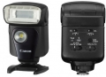

Speedlite 320EX的闪灯指数达GN 32 (ISO 100，50mm)，采用4枚AA电池及金属接脚配合快速上锁设计，支持E-TTL II自动闪光及可作两段24mm和50mm手动变焦。闪光灯发射方向可调校，能作反射闪光(bounce flash)拍摄，以向上90度及左右270度转动。除了作一般闪光灯使用外，更新增LED补光灯功能，提供相当于75流明度，于拍摄电影时可作补光，或在黑暗环境作对辅助焦灯使用。